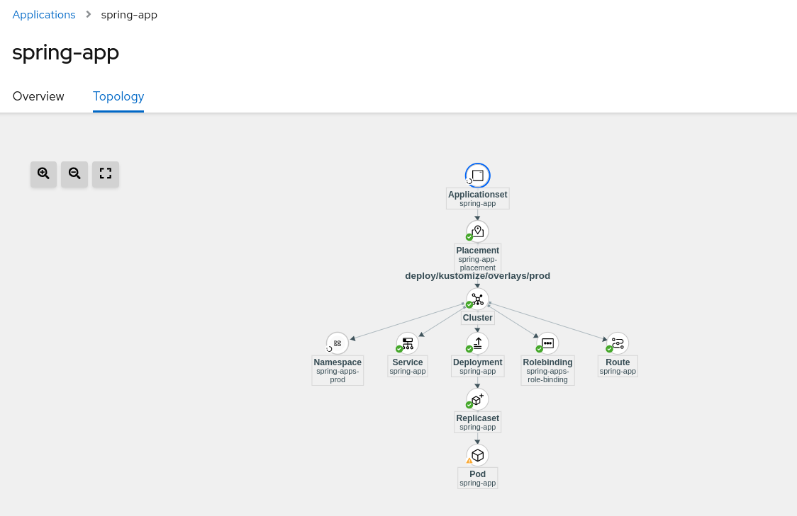

Deploy a GitOps application
Once the GitOps operator has been integrated into RHACM, we can create GitOps applications based on Argo CD.
-
Deploy a sample application
--- file install/03_acm-gitops.yaml
--- Create Namespace for GitOps operator
apiVersion: v1
kind: Namespace
metadata:
name: openshift-gitops
---
--- Create Subscription / Install Operator
apiVersion: operators.coreos.com/v1alpha1
kind: Subscription
metadata:
name: openshift-gitops-operator
namespace: openshift-operators
spec:
channel: gitops-1.6
installPlanApproval: Automatic
name: openshift-gitops-operator
source: redhat-operators
sourceNamespace: openshift-marketplace
startingCSV: openshift-gitops-operator.v1.6.1
---
--- Create Managed cluster set for Gitops Cluster
apiVersion: cluster.open-cluster-management.io/v1beta1
kind: ManagedClusterSet
metadata:
name: gitops-clusters
spec: {}
---
--- Create ManagedClusterSet Binding
apiVersion: cluster.open-cluster-management.io/v1beta1
kind: ManagedClusterSetBinding
metadata:
name: gitops-clusters
namespace: openshift-gitops
spec:
clusterSet: gitops-clusters
---
--- Create Placement for clusters with key vendor in Openshift
apiVersion: cluster.open-cluster-management.io/v1beta1
kind: Placement
metadata:
name: gitops-clusters
namespace: openshift-gitops
spec:
predicates:
- requiredClusterSelector:
labelSelector:
matchExpressions:
- key: vendor
operator: "In"
values:
- OpenShift
---
--- Create Gitops instance cluster
apiVersion: apps.open-cluster-management.io/v1beta1
kind: GitOpsCluster
metadata:
name: argo-acm-importer
namespace: openshift-gitops
spec:
argoServer:
cluster: local-cluster
argoNamespace: openshift-gitops
placementRef:
kind: Placement
apiVersion: cluster.open-cluster-management.io/v1alpha1
name: gitops-clusters
namespace: openshift-gitops
---
--- Create Gitops service
apiVersion: pipelines.openshift.io/v1alpha1
kind: GitopsService
metadata:
name: cluster
spec: {}oc apply -f install/05_acm-gitopsapplication.yaml
oc label ManagedCluster local-cluster cluster.open-cluster-management.io/clusterset=gitops-clusters --overwrite
oc label ManagedCluster local-cluster gitops-cluster=true environment=production-
Check sample application has been deployed from the RHACM Console > Applications > Search > rhte2023
